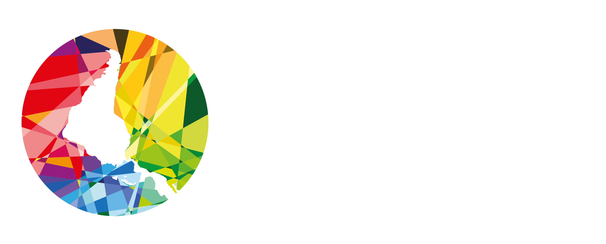

Saltar al contenido
PROPUESTA DE RENOVACIÓN · RAMALC
Contenidos originales de RAMALC

Menú
＋
La red
Novedades
Artículos
Comunicados
Ediciones
Multimedia
Contacto
☼
Apoya el encuentro
↗
RAMALC…
Esta prueba requiere JavaScript. Consulta los contenidos en
ramalc.org
.